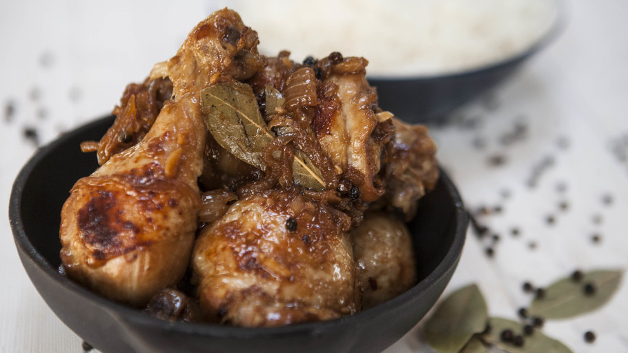

DISH HISTORY
The best classic dishes in South East Asia
-
NASI LEMAK
The origins of Nasi Lemak can be traced back to 1909, when it was first mentioned in a book titled “The Circumstances of Malay Life”, written by Sir Richard Olof Winstedt.
It is recognized as Malay dish and was popularized as a breakfast food.
In the olden days, Nasi Lemak was paired with fried fish, kangkung and
stir-fried sambal, while the rice would be cooked over an open fire and
closely monitored to prevent the milk from overheating. Nowadays, the making
of Nasi Lemak is less tedious as rice cookers have made its creation much
easier, while it is generally paired with anchovies or anchovies-infused
sambal variati
Recipe for this dish
-
LAAP
Laap (ลาบ) is believed to originate from Yunnan province in Southwest China, and is popular in Laos and the northern (Lanna) and northeastern (Isan) regions of Thailand.
Its ingredients and preparation, as well as the spices and herb combinations, vary greatly from region to region and from city to city, and also depend on the type of meat used in the dish.
Generally speaking, laap is made from minced meat, raw or cooked, to which – depending on the type of laap and the region in which it is being created – different ingredients and seasonings are added.
Recipe for this dish
-
LAHPET THOKE
Burma: Lahpet Thoke (Fermented Tea Leaf Salad) ... Lahpet, also spelled laphet, lephet, letpet, or leppet is fermented or pickled tea leaf, and it has a very long history in Myanmar. In ancient times, fermented tea leaves were used as a peace symbol or as a peace offering between kingdoms at war.
Recipe for this dish
-
PAD THAI
Though stir fried rice noodles were introduced to Thailand from China centuries ago, the dish pad thai was invented in the mid-20th century. Author Mark Padoongpatt maintains that pad thai is "...not this traditional, authentic, going back hundreds of years dish. It was actually created in the 1930s in Thailand by Plaek Phibunsongkhram, who was the prime minister at the time. The dish was created because Thailand was focused on nation building. So he created this dish using Chinese noodles and called it pad Thai as a way to galvanize nationalism."
Recipe for this dish
-
PHO
Legends and myths mean that many histories in Vietnam are coloured a variety of shades. This is also the case with phở, the country’s most famous dish, and its most successful culinary export. In the capital city of Hanoi, phở is a staple breakfast dish. The history of phở begins at the end of the 19th century, at the peak of French colonialism. French demand led to a greater availability of beef in Vietnam. This in turn produced a surplus of beef bones, which were used by Chinese and Vietnamese vendors to deepen and perfect the flavour of the Nam Dinh broth.
Recipe for this dish
-
RENDANG
Rendang is a traditional food originating from West Sumatra and prepared by Minangkabau people. Rendang is commonly made with beef (especially tenderloin) with special sauce containing a high amount of coconut milk. In the past, Minangkabau people prepared rendang in such a way that it has long shelf life and could be stored during long journeys. The long shelf life of rendang is thought to be contributed by the spices used during the cooking process. Nowadays, rendang is known worldwide, but its history and cultural significance are given less attention. In this article, the history and philosophy of rendang as the treasure of Minang people is discussed. To date, it is believed that rendang originated from India because of its similarity to Indian curry. The long cooking process of rendang has its own philosophy about patience, wisdom, and sincerity. Proper choice of beef, spice mix, control of heat, cooking duration, and stirring technique affect the taste of rendang. Traditionally, rendang is served during special occasions and to special people.
Recipe for this dish
-
FISH AMOK
“It’s not clear where it started but because this dish is made using freshwater river fish, I’d say inland areas,” says Cambodian master chef, Luu Meng of Malis Restaurant. “In central Cambodia, there is a lake called Tonlé Sap… The people who live near the lake eat fish amok every other day,” he adds. When making the dish, the fish has to be fresh and from a healthy, freshwater river – that will give the dish the perfect texture and will stop it from being too dry.
Recipe for this dish
-
CHICKEN ADOBO

When the Spaniards arrived, they saw how the Filipinos used vinegar to marinate their chicken, pork, and fish. The Spanish word ‘adobar’ refers to a marinade or pickling sauce. In his writings, Pedro de San Buenaventura labelled the Filipino version ‘adobo de los naturales’ – adobo of the natives. The name stuck.
As each region of the Philippines has its own produce and preferred flavor profile, there are different versions of adobo across the islands. Where seafood was plentiful, adobo ng pusit (squid adobo with squid ink) became popular. In Southern Luzon, where heat and coconut milk are popular ingredients, adobo ng gata (adobo with coconut milk and green finger chilies) emerged. There are countless twists on adobo, and around the Philippines you’ll find versions that include sugar, liver, potatoes, morning glory, laurel leaves, the list goes on.
Recipe for this dish
{kind=link}
{kind=link}
{kind=link}
{kind=link}
{kind=link}
{kind=link}
{kind=link}
{kind=link}